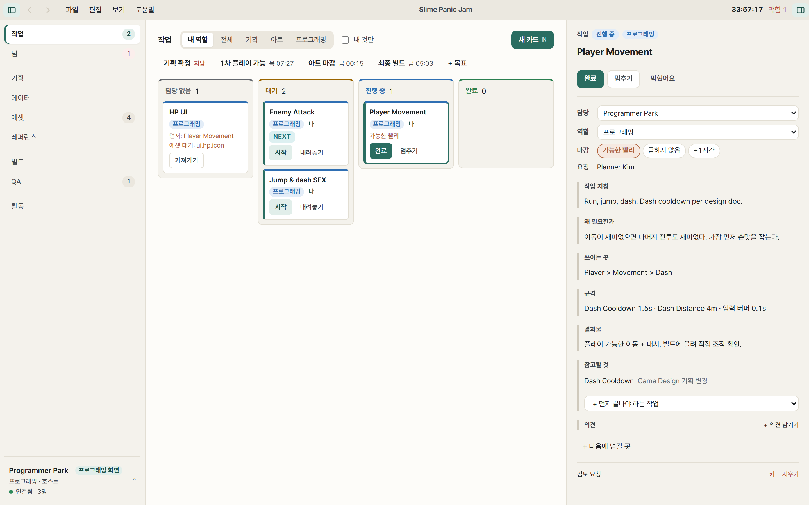
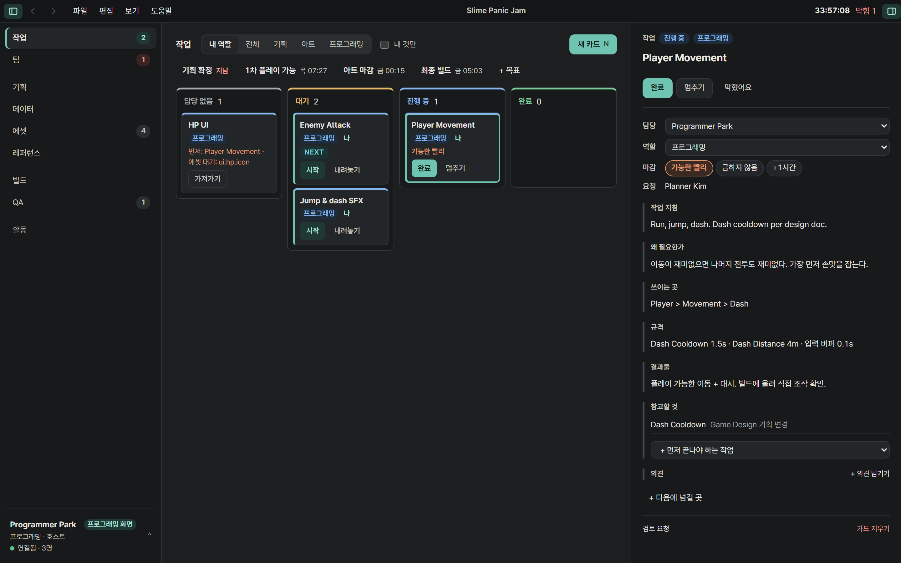
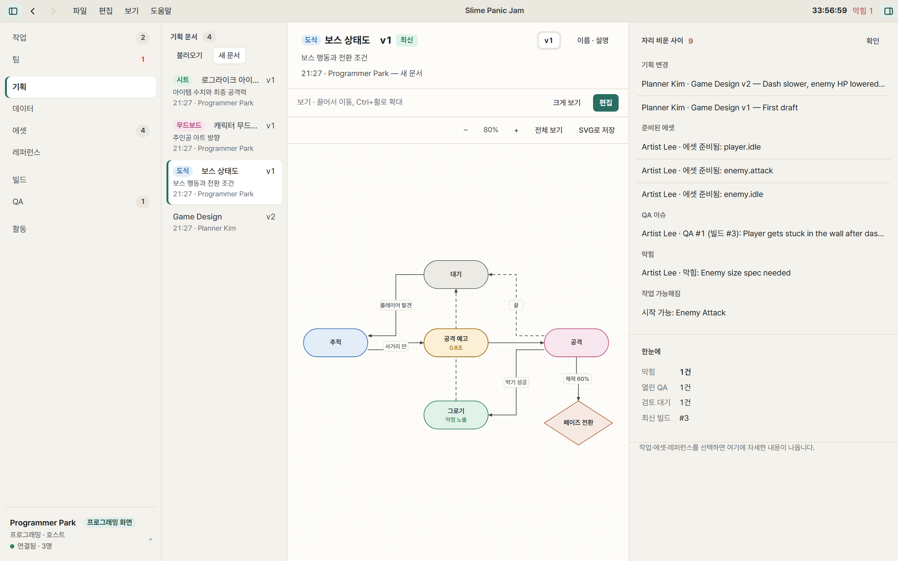
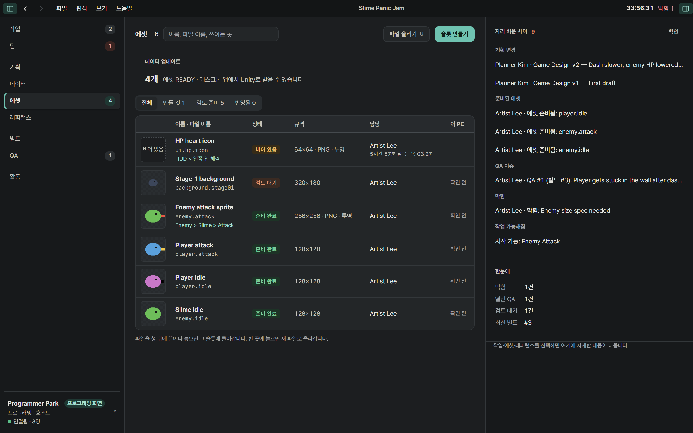
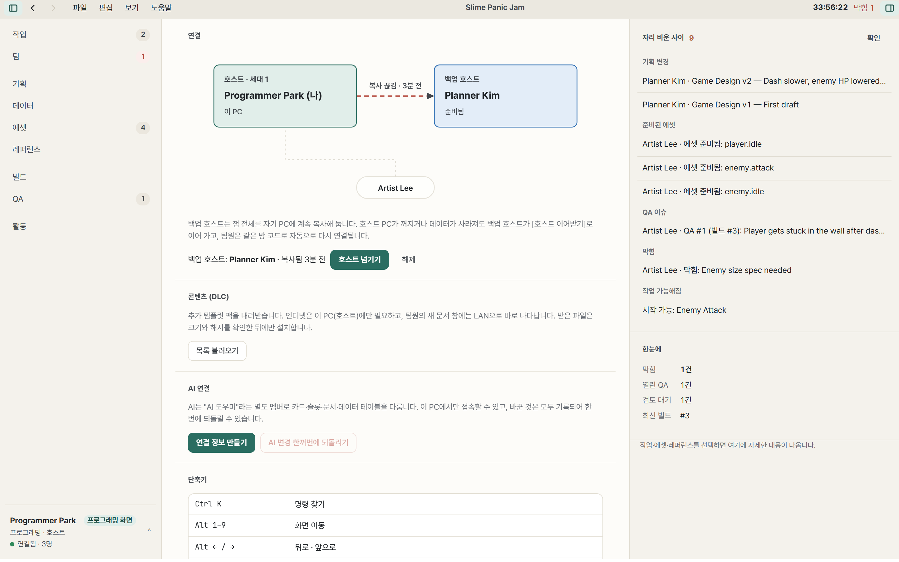

카드를 열면 바로 일을 시작할 수 있게
작업 카드는 제목과 담당자만이 아니라, 왜 필요한지, 어디에 쓰이는지, 규격과 결과물을 함께 가집니다. 다음에 넘길 사람까지 적혀 있어서 비동기로 일을 주고받기 좋습니다.
- 끌어 놓기로 가져가기, 시작, 완료
- 역할별로 먼저 보이는 화면이 다름
- 누가 무엇을 바꿨는지 이력이 남음
한 사람의 PC가 호스트가 되고, 같은 Wi-Fi의 팀원은 코드만 입력하면 됩니다. 작업 카드부터 기획 문서, 에셋, 빌드 실행, 버그 보고까지 48시간 동안 필요한 것을 한 창에서 주고받습니다.
지금은 실제 잼에서 검증하는 단계입니다. 첫 공개 버전이 나오면 이 페이지에서 받을 수 있습니다.

디스코드에 파일을 던지고 "최신 거 어디 있어요?"를 묻는 대신, 만드는 순서 그대로 이어집니다. 언제 열어도 세 가지가 바로 보입니다. 최신 버전은 무엇인지, 무엇이 바뀌었는지, 다음에 무엇을 할지.
작업 카드는 제목과 담당자만이 아니라, 왜 필요한지, 어디에 쓰이는지, 규격과 결과물을 함께 가집니다. 다음에 넘길 사람까지 적혀 있어서 비동기로 일을 주고받기 좋습니다.

문서는 제목 단위로 여러 사람이 동시에 고칩니다. 도식은 상자를 놓으면 격자에 맞고 연결선이 알아서 꺾여서, 정리하지 않아도 깔끔합니다. 엑셀처럼 쓰는 기획용 시트와 이미지 무드보드도 같은 곳에 있습니다.

프로그래머가 필요한 그림을 슬롯으로 요청하면 아트 쪽 보드에 카드가 생깁니다. 아티스트가 "준비 완료"를 누르면 프로그래머의 Unity 프로젝트에 같은 경로로 들어가고, 참조가 깨지지 않습니다.

팀원 한 명을 백업 호스트로 정해 두면 잼 전체를 계속 복사해 둡니다. 호스트 PC가 꺼지면 백업 호스트가 같은 방 코드로 이어받고, 팀원들은 다시 참가할 필요 없이 자동으로 연결됩니다.

같은 Wi-Fi만 있으면 됩니다. 행사장 인터넷이 느려도, 끊겨도 상관없습니다.
모든 파일은 호스트 PC에 저장됩니다. 외부 클라우드로 나가지 않습니다.
호스트는 Claude나 Codex를 연결해 카드·문서·표를 정리할 수 있고, AI가 바꾼 것은 한 번에 되돌립니다.